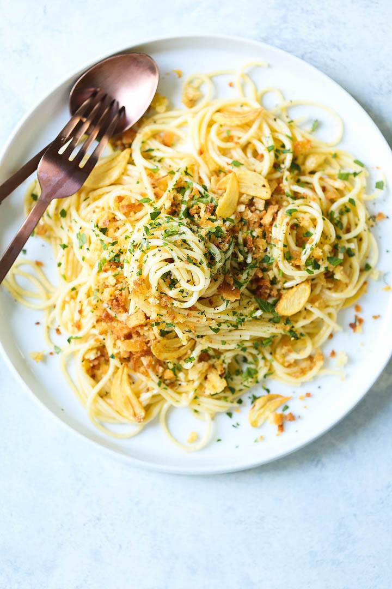

- CARBONARA
- AGLIO E OLIO
- SPAGHETTI BOLOGNESE
AGLIO E OLIO

Spaghetti aglio e olio (pronounced [spaˈɡetti ˈaʎʎo e ˈɔːljo]; Italian for '"spaghetti [with] garlic and oil"') is a traditional Italian pasta dish from Naples.
The dish is made by lightly sauteeing sliced, minced, or pressed garlic in olive oil, sometimes with the addition of dried red chili flakes (in which case its name is spaghetti aglio, olio e peperoncino), and tossing with spaghetti. Finely chopped parsley can also be added as a garnish, along with grated parmesan or pecorino cheese, although according to some traditional recipes, cheese should not be added.